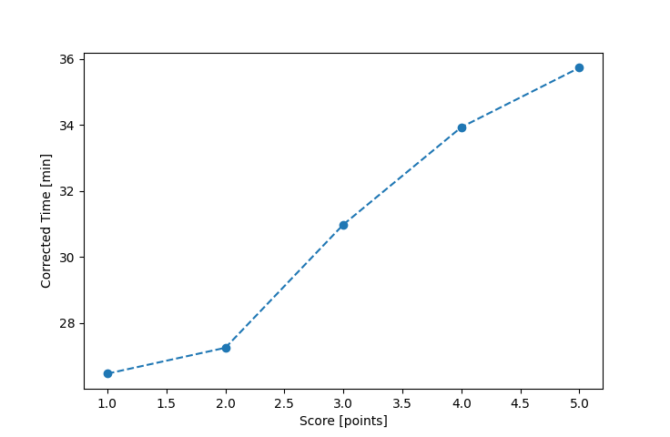

| Wind: | 2-3 (BFT) |
|---|---|
| RC: | Lewis_VRon_F |
| Date: | June 03, 2018 |
| Notes: | O course M plus an I 1 lap |
| Rank / Score | Name | Boat | Input Time [mm:ss] | Input Offset [mm:ss] | Race Time [mm:ss] | Race Time [s] | Handicap | Corrected Time [s] | Corrected Time [mm:ss] |
|---|---|---|---|---|---|---|---|---|---|
| 1.0 | Chris_E | SF | 27:41 | 00:00 | 27:41 | 1661 | 1.00400 | 1654 | 27:34 |
| 2.0 | Rod_H | LASEM | 27:45 | 00:00 | 27:45 | 1665 | 0.97300 | 1711 | 28:31 |
| 3.0 | Barry_O | HLR14 | 31:54 | 00:00 | 31:54 | 1914 | 1.11700 | 1714 | 28:34 |
| 4.0 | Bill_P | SF | 29:44 | 00:00 | 29:44 | 1784 | 1.00400 | 1777 | 29:37 |
| 5.0 | Nick_H | SF | 29:47 | 00:00 | 29:47 | 1787 | 1.00400 | 1780 | 29:40 |
| 6.0 | Pat_B | WF | 29:34 | 00:00 | 29:34 | 1774 | 0.91700 | 1935 | 32:15 |
| 7.0 | Eric_P | SWSX | 32:12 | 00:00 | 32:12 | 1932 | 0.95900 | 2015 | 33:35 |
| 8.0 | John_T | US-1 | DNF | -- | -- | -- | -- | -- | DNF |

Application Notes:
All race results are unofficial
View source code at https://github.com/cessnao3/portsmouthracecalc/